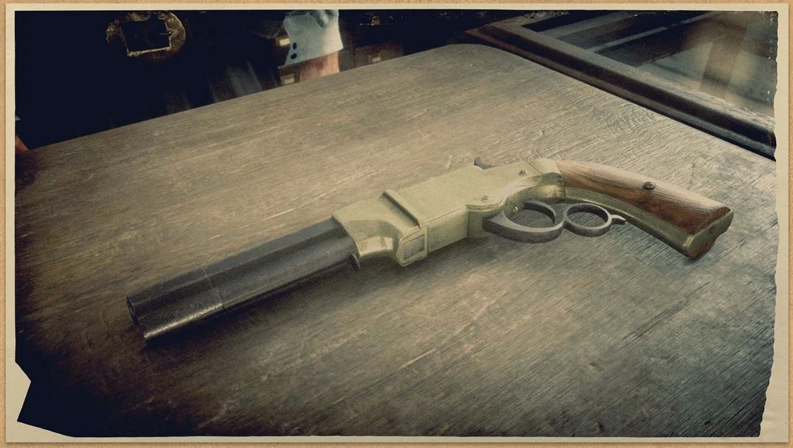

PISTOLS
A neccesary companion at least one will always be equipped on your character even when dismounting from a horse outside some scripted events u cannot unequip themm all.They are needed when dueling.
REVOLVERS
Cattleman revolver
A popular and classic sidearm, the Buck Cattleman is a great all-around revolver, featuring a good balance of damage, accuracy and fire rate. Suited for close to medium-range combat, this gun can also be dual-wielded and used on horseback. This gun has an ammo capacity of six rounds, and can use Regular, High Velocity, Split Point, Express and Explosive revolver ammo.
Schofield

The powerful Hutton & Baird Schofield is an accurate revolver with high damage, making a good choice for any serious gunslinger. Despite a slower firing rate and reload speed, when compared with other revolvers, it can still be dual wielded to great effect. This gun has an ammo capacity of six rounds, and can use Regular, High Velocity, Split Point, Express and Explosive revolver ammo.
Double action revolver
The D.D. Packenbush Double-action Revolver is a fast-firing weapon with relatively low damage. The advanced mechanism prevents the need to cock, at the cost of a heavy trigger pull and lower accuracy. The quick-fire rate makes this a good choice for mounted combat. This gun has an ammo capacity of six rounds and can use Regular, High Velocity, Split Point, Express, and Explosive revolver ammo.
Le mat revolver

The LeMat is a cap and ball revolver with a single-shot, smooth bore barrel of buckshot beneath the main barrel, allowing players to switch between revolver and shotgun ammunition at their leisure. The LeMat revolver is a very powerful but very slow-acting gun; with Revolver Ammo, it possesses the highest damage of all in-game revolvers, with its damage and accuracy being both marginally better than the Schofield Revolver and Volcanic Pistol and decisively superior to that of both the Double-action and Cattleman revolvers. With Express Ammo, this becomes even more exaggerated, with the LeMat revolver's damage now being comparable to some of the weaker rifles. However, as a downside, both its rate of fire and reload speed are the slowest of all in-game revolvers, although the latter factor is somewhat mitigated in that the ammo capacity is nine rounds as opposed to the default six. With Shotgun Ammo, the LeMat performs similarly to the Sawed-off Shotgun, except it has one round available instead of two.
PISTOLS
Volcanic pistol
The Hutton & Baird Volcanic Pistol combines the stopping power of a repeating rifle with the portability of a sidearm. Although the accuracy is good, the slow firing rate and reload speed mean that you'd better hit your target with the first shot. This gun has an ammo capacity of eight rounds, and can use Regular, High Velocity, Split Point, Express and Explosive pistol ammo.
Semiautomatic pistol

The new Peeters & Janssens Semi-Automatic Pistol deals less damage than revolver sidearms, but makes up for it by doing away with the need for weapon cocking, as well as an expanded ammo capacity and quicker magazine reloads. This gun has an ammo capacity of eight rounds and can use Regular, High Velocity, Split Point, Express and Explosive pistol ammo. The Semi-Automatic Pistol has the lowest damage of all firearms in the game, but it has a slightly higher magazine count than most, with 8 rounds, the fastest fire rate in the game, fairly high accuracy and a very quick reload time.
Mauser
A new import from Germany, the Mühlberg Mauser is a modern semi-automatic pistol with a low damage. The rapid fire rate of this weapon, along with a large ammo capacity, make this a good choice for close range combat, or when surrounded by multiple enemies. This gun has an ammo capacity of ten rounds, and can use Regular, High Velocity, Split Point, Express and Explosive pistol ammo.
1899 pistol

Only stocked by the best gunsmith in Saint Denis, the M1899 by Peeters & Janssens is a thoroughly modern sidearm. A semi-automatic handgun, the M1899 deals good damage at short range, and its magazine-loaded ammunition allows for a swift reload. This gun has an ammo capacity of eight rounds and can use Regular, High Velocity Split Point, Express, and Explosive pistol ammo.